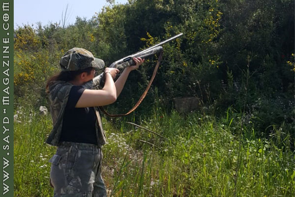

الذين يتنفّسون المغامرة يولدون من رحم العشق للطبيعة. وينمو مزاجهم على نبض التحدّي، ولا يخضعون لمقاييس التردد والإنكفاء والخوف والإنزواء. الصيّادة المغامِرة سيرينا ريشاني من هذه السلالة، ولدت في منزل يعتبر أهله أنفسهم جزءاً لا يتجزّأ من روح الطبيعة وإحساسها،ومن عالم الصيد المسؤول الذي يحمي الطبيعة بالوعي والمعرفة.

قالت في المقابلة- أحب أكل العصافير، وأبي هو من علمني الصيد، وهو صياد ماهر.
- أجيد رياضة الرمي على الصحون، وأعشق كل أنواع الأسلحة.
- القواص من يقتل بدون وعي ومسؤولية، أمّا الصيّاد فيلتزم بالموسم والطرائد المسموحة وأعدادها ويستطيع السيطرة على نفسه.
- أعشق التحدي في الصيد والرماية والقيادة خارج المسار (OFFROAD) مع والدي، وهو يتمنّى أن أتفوّق عليه.
- أحب جمع السلاح ولدي خزانة عرض لأسلحة الصيد المتنوعة.
- هناك من يُشجعّني بصدق، وهناك من أرى تعليقاتهم سخيفة فلا أكترث لها لأنها تعبر عن ضعف وحسد.
- الصياد الحقيقي يمارس هوايته بوعي ومسؤولية فلا يسبب الأذى للطبيعة ولا يشوّه سمعة الهواية.
- ليس لدّي شروط لمن أفكر في الزواج منه ولا بأس أن يكون مختلفاً عني.
- لكل رحلة صيد جمالها وذكرياتها، ولم أتعرض للخطر لأنني أقنص بمسؤولية وأختار المكان والأشخاص المناسبين. - أجمل لحظة في قيادة سيارة OFFROAD كانت أول قيادة لي.
- الـOFFROAD هواية لا تخلو من الخطر ولهذا نتحضّر لها لوجيستيًا ونفسيًا.
- أُمي كأبي تشجعّني لمتابعة هواياتي وممارسة المغامرات التي أحبها.
- السلاح يغريني أكثر من الرماية بالقوس والسهم.
- أستمتع جدًّا بصيد المطوق ولدي 5 كلاب ومزرعة.
- أحب الهوايات التي تبعدني عن التوتر وتقرّبني من الطبيعة أكثر.
- "paragliding" سوف أجرّبها هذا الصيف.